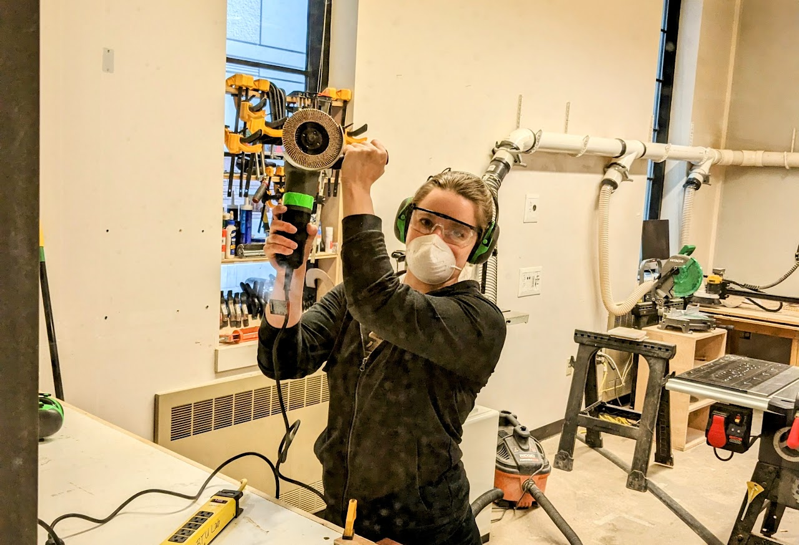

BLOW. THINGS. UP.
The ATLAS BTU Lab is an inclusive community makerspace facilitating projects at the intersection of Art, Design, Engineering and Architecture. It serves multiple functions as a general workspace, and workshop host.
WHO?
Anyone can gain access to BTU. Our goal is to provide the most diverse, inclusive environment for makers of all types in a highly experimental and productive space.*Due to increased campus security, we are currently unable to sponsor BuffOne Guest cards.

HOW?
New members attend a 20 minute general orientation covering community expectations, safety and equipment.

WHEN?
The orientation schedule, and all scheduled events can be found on the BTU Calendar. [Some things involve separate orientations...like lasers and stuff. Check the calendar and the pages above for your interests.]

Uh..WHAT?
Questions: email BTU Lab at atlasbtulab@gmail.com.

And, finally...WHERE?
320 UCB, 1125 18th St, Boulder, CO 80309
Help Us BlowThings Up!
We can't do it without you!
If you're interested in learning ways to support BTU Lab, contact lab Director Zack Weaver at zaja9653@colorado.edu.
If you've visited and know a good thing when you see it, you can go directly to our GIVING PAGE. Thank you from the whole BTU community!
Show us. And tell us.
BTU Lab hosts all kinds of workshops! Whether you're a student, instructor, local artist, or too cool for labels, come share your skills in two easy steps:
- Fill out this basic Proposal Form.
- Email us at "atlasbtulab@gmail.com" to let us know you did.
That's it! We will get back to you with confirmation as soon as possible.